HSSD scene5 — partial texture audit Habitat GPU RGB observations from the furnished scene. Stage JPEG textures load; KTX2 furniture textures are unavailable in this runtime because its KtxImporter plugin is absent.
all bedroom kitchen living room
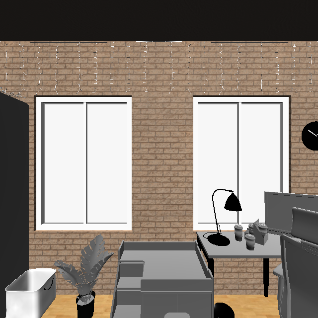
bedroom · yaw 000°pose=-7.16, 1.50, -4.26 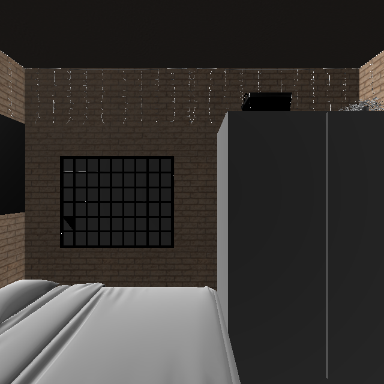
bedroom · yaw 090°pose=-7.16, 1.50, -4.26 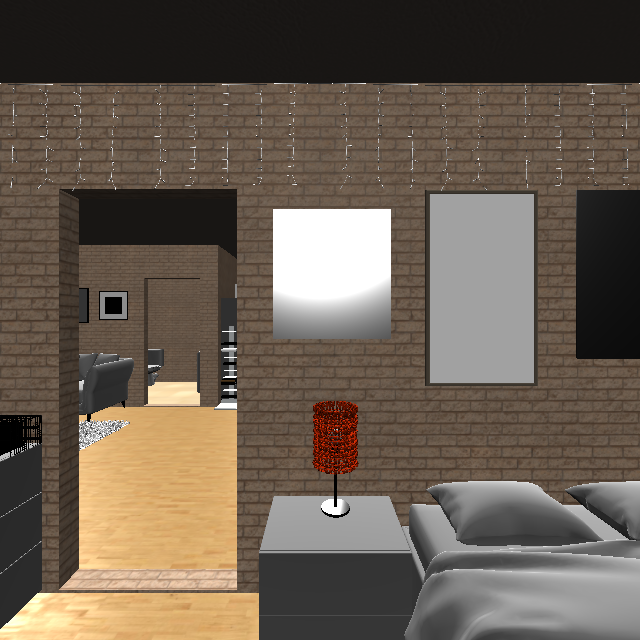
bedroom · yaw 180°pose=-7.16, 1.50, -4.26 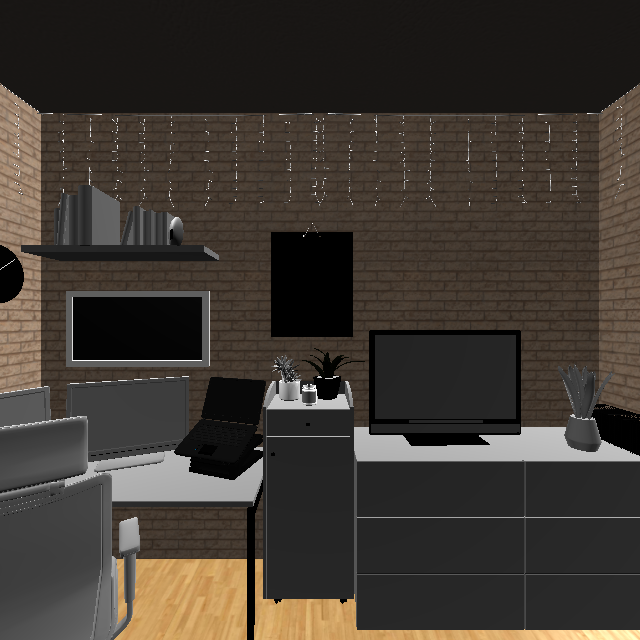
bedroom · yaw 270°pose=-7.16, 1.50, -4.26 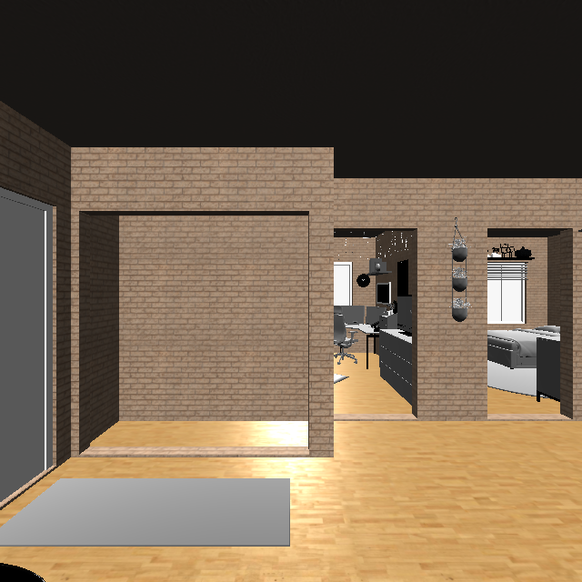
kitchen · yaw 000°pose=-7.19, 1.50, 1.00 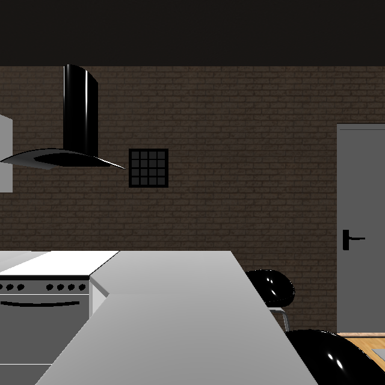
kitchen · yaw 090°pose=-7.19, 1.50, 1.00 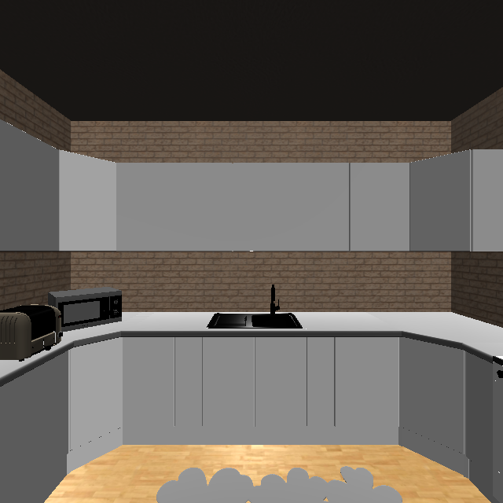
kitchen · yaw 180°pose=-7.19, 1.50, 1.00 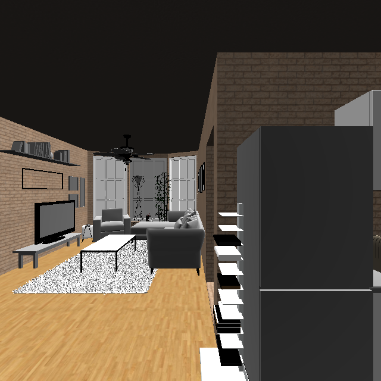
kitchen · yaw 270°pose=-7.19, 1.50, 1.00 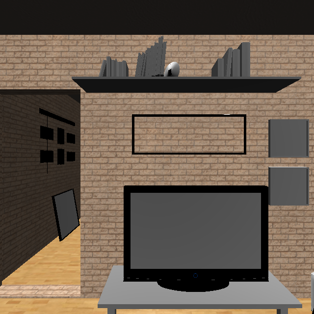
living room · yaw 000°pose=-3.13, 1.50, -0.69 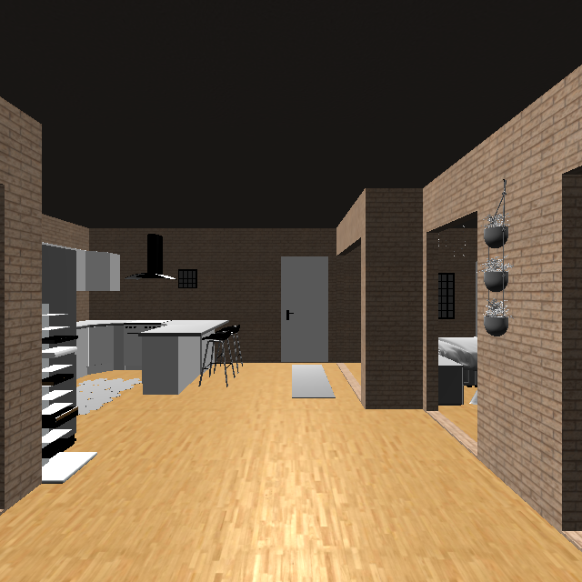
living room · yaw 090°pose=-3.13, 1.50, -0.69 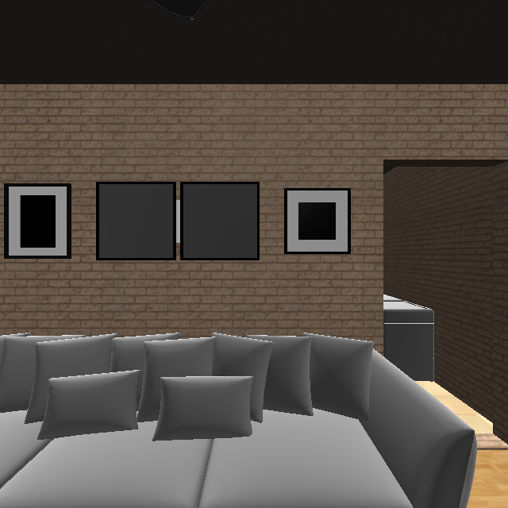
living room · yaw 180°pose=-3.13, 1.50, -0.69 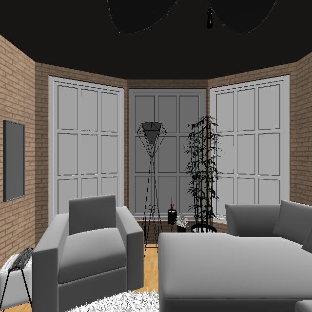
living room · yaw 270°pose=-3.13, 1.50, -0.69 HSSD assets: CC BY-NC 4.0 · review images are derived solely for non-commercial research inspection.